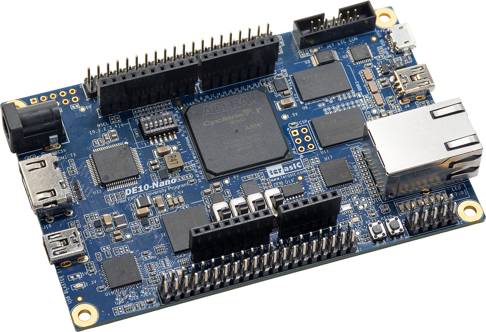

FPGA / PARALLEL8
6.916 siklus
74 → 128 → 64 → 3, delapan lane MAC. 138,32 µs pada 50 MHz; waktu core saja.
Simulasi historis Parallel8HACKATHON ITS 2026 / GARDA
Ikuti inferensi Parallel8 74 → 128 → 64 → 3 dan telusuri bagaimana GARDA membatasi keluaran kendali.

FPGA fabric untuk RTL GARDA. HPS ARM untuk perangkat lunak host.
DE10-Nano / bentuk konseptualDITELUSURI LANGSUNG KE VERILOG
| Port | Arah | Lebar |
|---|
DATA MASUK. KEPUTUSAN KELUAR.
Setiap blok di bawah membuka modul RTL aslinya.
Model 3D arsitektur. Explorer 3D menampilkan RTL DWA dan neural serial 24 → 64 → 64 → 4 yang terpisah dari eksperimen Parallel8 pada panel dataflow. TinyTapeout menampilkan core dual MAC. Posisi blok bersifat konseptual.
ANIMATED DATAFLOW / MODEL JADWAL RTL
74 → 128 → 64 → 3 · delapan lane MAC
Ikuti data dari buffer hingga tiga residual. Jadwal FSM Parallel8 berasal dari eksperimen FPGA historis: 6.916 clock pada referensi 50 MHz, hanya waktu core. Animasi edukasi; bukan simulator HDL atau pembacaan hardware. Core TinyTapeout 24 → 64 → 64 → 4 adalah eksperimen terpisah.
Siap memulai inferensi
Mode sorotan melewati pengulangan; counter tetap mengikuti clock sebenarnya. FC3 memakai tiga lane keluaran.
COBA GERBANG IZIN
Ubah kondisi pada model gerbang DWA yang terpisah. Proposal GARDA juga menetapkan batas umur hasil 20 ms dan watchdog inferensi 2 ms; integrasi penuh dengan Parallel8 masih memerlukan verifikasi.
Buka garda_safety_security_gate ↗Model perilaku JavaScript, dibandingkan dengan RTL. Demo lokal di browser.
Semua kondisi valid. Fault 0.
VERIFIKASI & IMPLEMENTASI
FPGA / PARALLEL8
74 → 128 → 64 → 3, delapan lane MAC. 138,32 µs pada 50 MHz; waktu core saja.
Simulasi historis Parallel8QUARTUS / PARALLEL8
64 M10K dan 8 DSP pada Cyclone V. Slack setup +5,647 ns.
Laporan fit historis Parallel8TINYTAPEOUT / EKSPERIMEN TERPISAH
24 → 64 → 64 → 4. Dual MAC. Q8.8. Model tetap pada logic ROM.
Memuat hasil pengujian terbaruTINYTAPEOUT / SOURCE AKTIF
Memeriksa bukti terhadap source aktif…
tt_um_wlmoi_garda_neural_logicHasil RTL dan status implementasi fisik ditampilkan secara terpisah.
Hasil Parallel8 adalah catatan simulasi dan fit eksperimen FPGA terdahulu; belum membuktikan implementasi gabungan atau pengujian board pada revisi ini. Sumber eksperimen Parallel8 ↗ Netlist IHP, bitstream, dan paket Quartus adalah bukti build historis. Hasil SKY130 memerlukan build dan signoff tersendiri. Daya 506,69 mW berasal dari estimasi vectorless proyek DWA lain, dengan confidence rendah; pengukuran board dan sistem masih diperlukan.
PERANGKAT YANG DIGUNAKAN
Cyclone V SE 5CSEBA6U23I7. USB-Blaster II untuk JTAG; GPIO untuk UART host.
UART TTL 3,3 V: ground bersama, TX/RX silang. Pin mengikuti garda.qsf; motor STM memakai protokol terpisah.
Referensi perangkat Terasic ↗
Layout dipublikasikan bersama hasil pemeriksaan fisiknya.